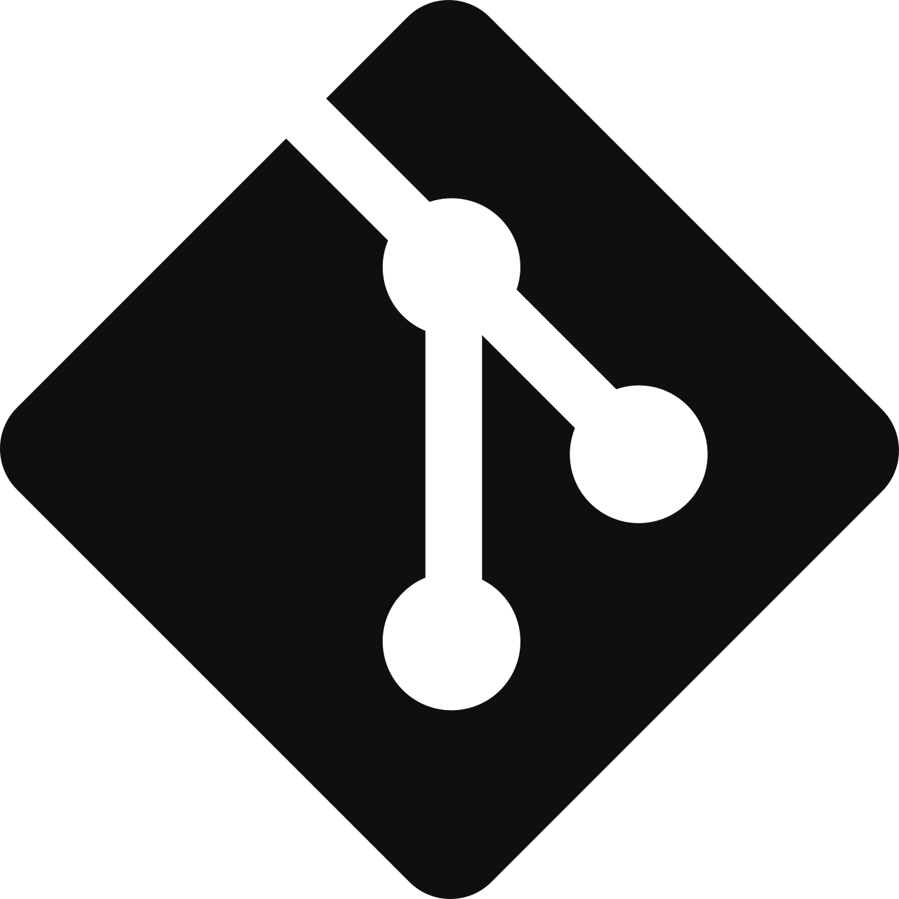

instantiator.dev
I'm a senior tech lead, writing about tech, volunteers, public safety, and collective intelligence. This blog contains articles, tools, code and ideas.
- Presence (tool) (in dev)
- ListSky (tool) (in dev)
- The Epistolorean (service)
- Consensus Games (service) (in dev)
- JSON to Smart CSV (tool)
- Escape the Review (profile)
- In this house... (calendar)
- A chat with Lewis (call)
Free AI-assisted coding tools 2: Managing your code
tutorialUse git to keep a full history of your coding project and track changes. It’s a commonly used tool to help manage your work.
What is Git?
Git is a very popular version control tool. It has been a very popular tool to manage software projects for a good while, and remains reasonably unchallenged as the industry standard (for now).
If you’re working in software development, or you want to be in future, you’ll need to be familiar with git and how it works.
⏩ If you’re already familiar with
gityou can skip this tutorial. It’s focussed on getting you started if you’ve never used it before.
Version control systems keep a history of every change you make to your files.
NB. There are other version control systems: cvs (uses rcs), mercurial, and others. I won’t be discussing them here. Each has their advantages and disadvantages - but git is a clear front-runner for flexibility, and has wide adoption.
Using version control means you can safely make changes to your software, and roll the whole project (or any part of it) back to any previous point, if you need, without losing your work.
Git also supports a variety of ways to work with other developers without accidentally interfering with each others work. By creating branches, you can work in parallel with other developers, manage the history of those changes separately, and merge those changes together when you need.
Each git project is called a repository. It’s a place to keep the source code of your application and its documentation, and the history of all the changes you’ve made. Typically you’d create a repository for each piece of software you’re working on.
You may decide to build a collection of applications. Opinions vary about whether you should place them all in the same repository (this is called the mono-repo pattern), or into separate repositories. Often, a change to one application should be delivered together with changes to other applications that depend on them. In that case, the mono-repo pattern becomes more attractive - because you can make a single change that affects everything at once. Coordinating separate repositories with separate histories would make that more complex.
GitHub and other providers
Git is often confused with repository providers, like GitHub, GitLab, BitBucket, Gitea, etc. By using a repository providers, you can keep a centralised authoritative version of your repository.
| Git icon | GitHub icon | GitLab icon | BitBucket icon | Gitea icon |
|---|---|---|---|---|
 |
Like a shared drive, these services support collaboration with features that improve how you can use git. They keep your code safely backed up, and allow you to publish open source projects in a commonly understood way.
Most providers have a similar set of features these days - meaning you can expect to see common collaborative methods, and automations for your repository.
There’s often a small fee to use a provider’s features - although this can be almost-free if you’re only using a small amount of automation, and if you open source your code.
Using a service or self-hosting...
You don’t need to use a third party provider, but it’s commonly done because:
- providers are accessible through the internet, which makes publishing your open source code and working with others easy
- providers manage their service and keep it up to date - they are responsible for managing authentication of your contributors and some aspects of security around your respositories
The disadvantages are:
- loss of control and privacy - you’ll be storing your code with a third-party service
- costs - as noted, these services have fees (albeit often with generous free tiers)
The alternative is to self-host git. These offer a higher degree of privacy as your code remains stored inside your own network, but you will have to install, run, and maintain the provider yourself. This places the responsibility of securing the service on your shoulders.
You may also find that you are missing automation and collaboration features that you need if working in a team.
Why is this important?
You could write software without version control, but you’re missing out on important protections, and a mature way to collaborate. Software is made up many complex and interdependent components, and without a series of safeguards it can very quickly spiral out of control. Version control is one of those safeguards.
That said, you can get started without knowing everything…
Terminology
Below are a number of features you may wish to learn about. Open any section to learn more, or refer back to here when something comes up.
CI/CD...
Repository hosts also offer other features, such as security audits, test runners, and automated deployments. Many projects have CI/CD pipelines.
- Continuous Integration (CI): The practice of automatically validating code changes by running tests against them before allowing them to merge.
- Continuous Deployment (CD): The practice of automatically deploying code that has been merged.
Commits, branches, merges, pull requests...
As you make changes to your project, you’ll modify different files. A commit is a group of these changes, bundled together, that represent a single conceptual change (eg. “Add the login screen”, “Update the logo”, etc.)
Whenever you make a commit, it is added to the branch you are on. When you get started, your repository will have one branch - the main branch. It’s common to let that branch represent the authoritative version of the project.
At any time, you can create a new branch from the commit you are currently at (or any other). When on another branch, your commits will be added to the new branch - not the main branch. This means you can create as many commits as you need to develop a new feature, or fix, or improvement, and work on it in isolation from the rest of the project.
When you switch between branches, the files you see are changed by git to reflect the last commit on the branch you move to. You can work on many different things in this way, alternating between them by moving between branches.
This is great for working on multiple features, and great for working in collaboration. Developers can work on separate branches, meaning that they won’t interfere with each other. But what happens when a branch is ready?
It’s possible to merge from one branch to another directly in git. This is a very simple approach to combining two streams of work, and it’s worth understanding why most development teams do it in a more round-about way…
Developers create pull requests to represent changes they wish to merge.
A pull request is a bundle of different pieces of information, and they’re handled by the repository host, rather than git. GitHub’s pull request is one example, but all services have a lot in common:
- the branch that the changes are coming from
- the branch that they’re targeting
- a description of the change
- lots of code review, testing, and approval features to help you manage a publishing workflow
Working this way means that developers can carefully manage changes, review them, catch mistakes, and catch bugs before they enter the code base.
Pull requests are one of the benefits of working with hosted repository providers like GitHub.
Push and pull...
Working with GitHub or another repository host means that your local copy of the repository isn’t the authoritative copy. That means you’re going to need a way to pull what’s there into your own copy, and push your own branches changes up to the remote copy.
Git is built for this - and it’s normal for each branch to have an origin - an equivalent branch found on the repository provider’s version of the repository.
The easiest way to think about it:
- pull - get the latest commits from a remote branch
- push - send your commits to a remote branch
Staging...
Before you create a commit, git helps you to decide what will go into that commit. By adding files to a staging list, you can prepare a group of changes that will then become a single commit.
Environments...
This is more of a software development term than specific to git. However, it’s helpful to think about, especially if you’re developing software that you want to be able to test before changes go into production…
Software projects often have multiple deployment environments. Examples are: testing, demo, production
These are often entirely isolated instances of the application, each for a different purpose. This allows data to be separated, and for changes to be carefully managed. It’s likely that the most recent changes will be deployed to a testing environment first, where tests can be run against the application.
If it passes those tests, it may then be deployed (‘promoted’) to the demo and production environments.
Each project will have its own policies surrounding these deployments. Some projects will run automated checks, and automatically promote code changes from one environment to the next if the tests pass. The main advantage of this is the speed at which changes can be safely tested and deployed to production. Others may rely on manual gating, so that changes can be managed. This may be because significant changes to the project could be disruptive, or because the automated testing suite isn’t mature enough yet to give sufficient assurances - and so changes must be grouped and manually tested first.
Summary
| Term | Meaning |
|---|---|
| git | An application to help you track and manage changes in code repositories. |
| staging | A collection of files that are under consideration for inclusion in a commit. |
| commit | A single change to a repository. (Can represent changes to any number of files.) |
| branch | A sequence of commits. |
| pull, push | Get all commits from a remote branch, or push local commits to a remote branch. |
| pull request | A request to merge the commits from one branch to another. |
| environment | An isolated instance of your application, for a specific purpose. |
A common workflow
-
Switch to
mainand pull the latest - ie. get back to the most recent authoritative version of the project -
Create a new branch for your current piece of work (and switch to it)
-
Make some changes
- Add those changes to staging
- Create a commit from staging (give it a helpful description)
- Make some more changes…
- Add those changes to staging
- Create a commit from staging (give it a helpful description)
- Keep going until your change is ready for review…
-
When ready, push to a remote branch
-
Create a pull request from that branch to main
-
Kick off your publication workflow…
- A colleague reviews your pull request and approves or suggests changes
- Iterate by adding more commits with improvements until ready
- After final approval, merge your pull request to
main
Installing Git
These installation instructions are for the terminal. Working with shell commands in a terminal is an essential tool to help you understand and manage software development.
💡 If you’re struggling, your coding assistant can explain most things.
💡 If you just want a quick reference for a command, use the
mancommand (manual), or the--helpoption for your command (which is commonly implemented for most commands). eg.man gitor:
git --help
macOS...
Type:
git --version
If Git is not installed, macOS will prompt you to install the Xcode Command Line Tools. Follow the dialog and it will install Git for you.
Windows...
Download and install git from: https://git-scm.com/download/win
Linux...
Use one of these commands, depending on your system:
sudo apt install git # Debian / Ubuntu
sudo dnf install git # Fedora
Check it works
git --version
You should see something like git version 2.x.x.
First-time setup
There are few more things to do. Once you have git installed, you’ll need to make sure it knows who you are, so that your changes can be attributed to you.
Create an account on GitHub
If you don’t already have an account, create one now: Visit github.com and create a free account if you don’t have one.
Set up git
git config --global user.name "your name"
git config --global user.email "your email address"
Creating a repository on GitHub
- Sign in to github.com
- Click the
+icon in the top right corner and select New repository - Give your repository a name (e.g.
my-data-prototype) - Leave it Public if you don’t mind that it’s free and shareable, or choose Private (you can change this later if you need)
- Consider the templating options1, or the option to create a
README.mdfile when creating the repository - Click Create repository
GitHub will create the repository. If you didn’t allow it to template anything, it will show you a page with setup instructions. If there’s already code there from a template, GitHub will show you what’s in the repository.
Cloning the repository locally
“Cloning” means making a copy of a GitHub repository to your computer.
For this tutorial, I’ve assumed you’re starting with a fresh repository (ie. you’ve done no work on it).
Create your src folder
This is something you’ll only need to do once.
Most developers keep all their code repositories inside a folder called src. It’s not a strong requirement, but it’s a common convention and it helps to find things. You can name it anything else and it won’t matter…
-
Create a
srcfolder:Navigate to your home folder:
cd ~Create the new folder there:
mkdir src -
Enter the
srcfolder:cd ~/src
Clone the repository
-
On your new repository page on GitHub, click the green Code button
-
Copy the URL under HTTPS (it looks like
https://github.com/your-username/your-repository-name.git) -
Open a terminal in VS Code (
Ctrl+backtick/Cmd+backtick, or use the Terminal menu) -
Clone the repository:
git clone https://github.com/your-username/your-repository-name.git
Opening the repository in VS Code
- In VS Code, go to File > Open Folder (or File > Open)
- Navigate to the new repository folder, and select it
- Click Open
VS Code knows this is a Git repository, and you’ll see a Source Control icon in the sidebar (it looks like a branching line) where you can view changes, stage files, and commit through the UI, as an alternative to working in the terminal.
The instructions in this tutorial will refer to the terminal commands, because it is helpful to understand what is happening - but it’s nice to have a visual tool to help you see and understand what’s going on, or to make it easier to take a little more control over the process.
💡 The next time you open a terminal, it’ll start in the folder that VS Code is currently working in.
How Git fits into your workflow
The basic cycle when working with Git is:
- Edit files — make changes to your code
- Stage — tell Git which changes you want to save (
git add) - Commit — save a snapshot with a message (
git commit) - Push — upload your commits to GitHub (
git push)
This means your work is always backed up and versioned. If something breaks, you can look through your commit history and get back to a working state - and git offers plenty of commands to help you do that.
Useful commands
Here are some simple commands to help you get started using git with your new repository:
| Command | What it does |
|---|---|
git status |
Shows which files have changed |
git add . |
Adds all changed files to staging |
git commit -m "description" |
Creates a commit with a message |
git push |
Pushes new commits to the branch on GitHub |
git pull |
Retrives the latest commits from the branch on GitHub |
git log --oneline |
Shows a short list of recent commits |
💡 Of course, you could ask an AI coding assistant to do all of these things for you. I don’t recommend that until you’ve used it so much you’re over-familiar with it. Although an assistant can take away these minutiae, you must understand what it is doing if you want to be responsible for the code that’s committed. That comes from hands-on experience.
Resources
If you’d like to get more familiar with git, here are some further resources.
- Set up git (GitHub tutorial)
- Think like (a) git (advanced git tutorial “Git shouldn’t be so hard to learn”)
Great!
You now have a repository on GitHub, a local copy on your machine, and the tools to track your changes. In the next tutorial, we’ll scaffold a prototype project, and make our first commit.
-
If you aleady have a local repository that you want to link to the repository on GitHub, create a blank repository with no templating. Otherwise, you’re starting fresh - so explore the options, as there may be something to help you get going. ↩︎